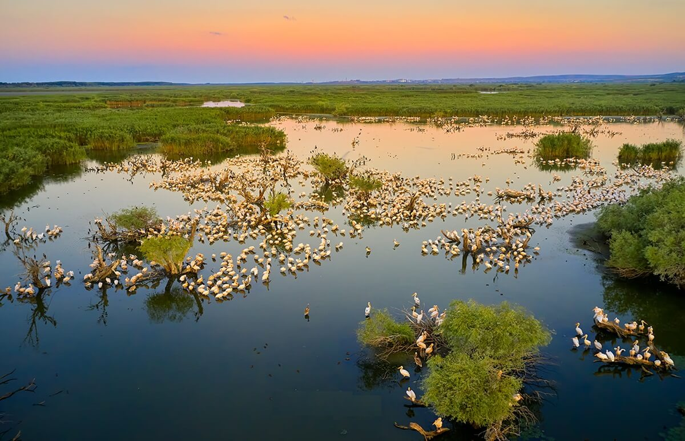

- Paradis natural, habitat pentru peste 300 de specii de păsări. Această zonă este un adevărat paradis natural, recunoscută la nivel internațional pentru biodiversitatea sa remarcabilă, adăpostind peste 300 de specii de păsări, unele dintre ele rare sau aflate pe cale de dispariție. Printre aceste specii se numără pelicani, egrete, stârci, lopătari și numeroase specii migratoare care găsesc aici condiții ideale pentru hrănire, cuibărit și odihnă în timpul migrației.
- Ideal pentru ecoturism, pescuit, plimbări cu barca. Zona este ideală pentru activități de ecoturism, oferind turiștilor ocazia de a explora peisaje spectaculoase, canale liniștite și lacuri bogate în viață sălbatică. Plimbările cu barca permit accesul în locuri sălbatice și greu accesibile pe uscat, unde vizitatorii pot observa fauna în habitatul ei natural. De asemenea, pescuitul sportiv este o activitate populară, desfășurată în mod responsabil, în armonie cu natura, atrăgând pasionați din întreaga lume.
